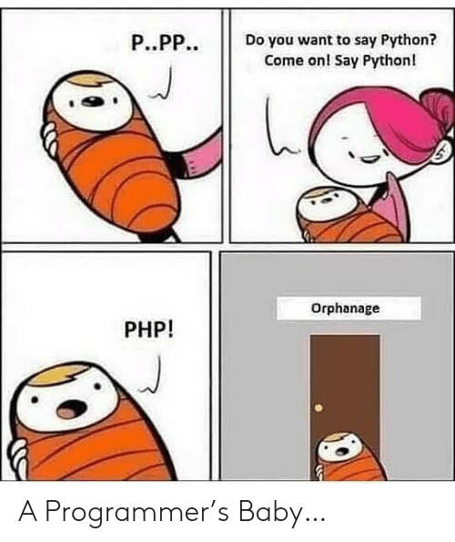

A report from the course Software development for the Web
S01
Well. Since we have used github for our two latest projects, I'm quiet familiar with it.
First time using github I only used the terminal, our teacher Andreas adviced us to do so. Then we didnt use github for 6 months or so.
The next project I used the integrated git in intelliJ, which makes merge conflicts waaaaay easier to control in my opinion. But for this assignment i've used the terminal, which is good to refresh your memory. And its the first time I
use tags in git. Which will be interesting.
I've never created a website before, i did however start using html and css a few weeks before we started the course, so I have a small headstart. I've barely touched JS but one alert message. Im looking forward to apply more js
on my website.
So, my TIL this section is probably tags, and with a little headstart, how to seperate JS from html. Also some more css!
_____________________________________________________________________________________________________________________________________________________________________________________________________
S02
Q1: Have you any previous experience of HTML, CSS and/or JavaScript?
We have used CSS in our android course, which gave me some experience. HTML and javascript are brand new for me, i've barely open the devloper console in a browser.
I have however disabled javascript in the browser a few times, to be
able to read some articles on certain pages. But the sites tends to fix that 'hack' now.
So I know what CSS is, and how to modify parts, but I'm not a good designer. So the front end parts dont get so beautiful. It wasn't so hard
to understand what HTML was. I knew before that the javascript part is what makes the site 'alive'
Q2: Explain the role of HTML, CSS and JavaScript in web development.
HTML is used to give a structure to a site, like creating a table or creating places to put text on or make a button.
Then the CSS comes into play to alter the table. It can for example change font type, background colour and style them.
It also adds effects on the said button. Like transition. (Changing size in a nice movement)
Then javascript enters and can for example make a button clickable, to produce something like a duck to move around. Or in my project, create a little game.
Q3: What is your TIL for this course section?
My TIL for this section was that github had the possibility to host your site, which is very usefull!!
_____________________________________________________________________________________________________________________________________________________________________________________________________
S03
Q1: Do you have any previous experience of client side JavaScript?
No i do not have previous experience. As stated in S02, I've never used JS, client or serverside before. I did however enjoy making the duck.
The duck image was 'stolen' from the teachers example repo.
Q2: Can you compare and relate the JavaScript language to any other language you know?
Of course. It's progamming! I've programmed in Java alot during my time on HKR. We have been using some c/c++ with arduino
So in JS we have the basic statements like if, for, while loops etc.
Q3: Describe how you worked with the coding exercise, what grade do you aim for and how did your code turn out to be?
As a start i just aimed for grade 3. But I set up a page for flags, to do it later. *UPDATE* I have fullfilled the flag part. I couldnt make it 'Displayed: none' with transition. But im kind of satisfied with the js script thats generic for the flags.
My TIL for this section is further understanding how CSS and JS can be integrated together. How CSS can be modified through JS
_____________________________________________________________________________________________________________________________________________________________________________________________________
S04
Q1: Tell me about your previous experience on node/npm or any equal programming tools.
I have never used Node nor npm before. I did however use pip. Which is a package management sytem for Python. It works in a similar fashion.
Q2: How do you feel about working with JavaScript, Node and Express
I feel that javascript keeps growing on me. Node feels good work with. As we created a restful server with java, this feels waaaaaaaaaay much easier to do. Less code, the understanding gets more obvious with less code.
I really think
that we should have had this course earlier in the program. It would be better for the students because.. this is fun.
Q3: Explain how you did take on the coding assignment, did you have a plan and did it work?
Well i didnt really have a plan. I attended the lectures and googled some to get going. The example repo made clear on what to do.
What grade did you aim for and was it a difficult level?
For this assignment, as the other with multiple grades, i aimed to just start and get a 3. And deal with the grade 4&5 later. I tend to drift away and try to do things I want to do, thats not necessary in the grade part.
Q4: What is your TIL for this course section?
My TIL was that a restful api is much easier to create with node than with JAVA.
_____________________________________________________________________________________________________________________________________________________________________________________________________
S05
Q1: How do you feel about PHP as a programming language?
Well... I've seen memes on the internet mocking php, calling it "dead language" etc. My initial thought was: "This language is ugly, whats the deal with the dollar sign...?!?!"
But the language grows on me. It isn't that bad.
Q2: Can you compare PHP to other languages you know?
Well yes, its still programming. However the $ signs is weird and makes the code weirder. Its also not so smooth to always type the dollar sign over and over.. Im till a bit confused about the objects.
How did i approach it?
I started of googling and trying to figure out how to solve this exercise. I found it hard to get it correct. So i got a friendly hint from a classmate. It apperently existed example code. Then i pulled the latest example code and reviewd
it.
Edit: About a week later mySQL didnt want to connect to my code that worked before. really weird. So I put about 3 hours trying to fix it. It led to me deleting users from mySQL and I had to reinstall mySQL. Then it worked again.
Whats my TIL?
Well i learned some PHP and how to connect to a database. Which wasnt so complicated afterall. Edit: I also learned that one thing might work one day, but the next they wont. So always check your assignments and code once in a while.
EDIT: After working with my project and using node.js with mySQL i feel like PHP is way more complicated and messy.
Added a picture for fun 
__________________________________________________________________________________________________________________ ___________________________________________________________________________________
S06
What is your own opinion on popularity of programming languages and what are your thoughts of future popularity among programming languages?
Well im not an experienced progammer. But I read some online about it, and i feel like popularity depends on where you are, what you work with etc. I've read on different programming groups on facebook for example, where they state that java
is dying. "Dont learn java, its dying!!!"
So I mean that it depends on what you as a company/programmer want to achieve. What you started out with, and what works as you intend it to work.
What will be your own choice for selecting future programming languages?
Well I will try to keep advancing in Java, since i think i have a good start in it. I feel like JS will always be good to know and use in webdevelopment. I also think that alot of people on the intenret are "hype beasts", i.e. as soon as something
gets trendy, they hype it out and bash on the other.
To conclude this question I'd say that I would be working with what ever language suits my purpose. Or what ever language the company I work at chooses to use.
Do your own investigation on https://trends.google.com (Links to an external site.) to customize your own comparison on programming languages (or frameworks) and elaborate on the results.
So I compared C#, C++, Java, and Python for the past 12 months in web search.
Java and Python competes for the most trendy accordin to Google. While C# is slightly more trendy than c++, but both are more than 'half' as trendy than Python
and Java. In Sweden python is the most trendy search. While c++ is the least trendy.
Looking 10 years ago, in Sweden 2010, Java is by far the trendiest and python the least trendiest.
A funny note is that during late december, all seems to fall. I suspect progammers taking their holiday then! :)
If you were to recommend a language/framework/technology to your potential employer and your next large project, what would it be and how would you “sell it”?
I have seriously no idea. I would be biased and recommend Java for any application, since thats what I know.
My TIL:
I learned how to use google trends... I've never used it before. It's not really 'today', but I still don't belive in hyping trends.
_____________________________________________________________________________________________________________________________________________________________________________________________________
S07
Try to explain the platform .NET (C#, ASP.NET) to a skilled programmer, but newbie to this Microsoft technology.
Dotnet uses a MVC framework. Its used to develop web applications, windows and mobile applications
It is usually written in C# and obvisouly is Object-Oriented Programming.
Elaborate by comparing .NET technologies with the other technologies we learned during the course.
So i think .net is very confusing. You get smashed with alot of files and it gets confusing as a start. Of course, if you put time into it it wont be as confusing.
I really liked to use Node instead. The initial thought, especially with
all the generated code you get, is that its similar to Android Studio, where you also get auto generate code. The difference for me tho, is that we had a whole course on Android Studio and you go into it after a while. I would like to
have a course on .NET to get a grip on it and to be have an easier time playing around. Like at least 4hp.
As a start I wanted to aim for grade 4 or 5. But as the course went on I felt like it would be hard to finish it with both
our degree project and project in this course. So I have only made grade 3 for this.
What is your TIL for this course section?
That .NET is very difficult and, atleast in VS code using .NET you dont get so explaining error stacktrace. You also don't get so good suggestions on your syntax error. Which is rather annoying.
_____________________________________________________________________________________________________________________________________________________________________________________________________
S08
S08
Members: Isak Zayane, Oscar Odelstav, Simon Westerdahl and Fredrik Lémon Larsson.
The data collected: https://drive.google.com/file/d/1_wnIwN9Sp8wWEU1myFZWR4r_xUvVyk82/view The pages compared are GitLab, which is hosted on Fredrik's server,
Androids Developer page, and Wikipedia.
Overall Wikipedia has the best time on each time measure. If you compare AndroidDev and Wikipedia, which both is for documentation but AndroidDev finished 100 times slower than Wikipedia. One could argue that AndroidDev should apply a wiki instead of their layout, to get better overall speed time. The AndroidDev is also about 10 times slower on first CPU idle time, so their page will not be as quickly responsive as wikipedia either.
We chose Fredrik’s GitLab page just to see its response time for curiosity. Since it’s hosted on a server in Fredriks garage its surprising that it finishes 10 times faster than AndroidDev. Since AndroidDev got established business servers in comparison to Fredriks server. However measuring GitLab we only measured the first login page and not further into the site. When logged in you might see slower speed since there is more security as you log in. The GitLab and Android Devs First Input Delay (FID) are 1.78 and 0.59 seconds respectively. Going above 2-3 seconds can be too long for a user to have a pleasant experience, whilst Wikipedia's FID is 0.05, which is splendid!
An important metric in the performance section is Time to Interactive. Wikipedia, having the best time at 0.7 seconds while GitLab and AndroidDe have 8.4 and 14.5 seconds respectively. Having 14.5 seconds on TTI is not good at all and users might end up using other sources than AndroidDev while for example looking up guides for Android Studio.
_____________________________________________________________________________________________________________________________________________________________________________________________________
S09
Elaborate on a few (3-5) different security issues or concerns, from your own experience, related to web application security and relate them to the OWASP top ten.
Well one of the classic security concern one must take into consideration is SQL injections. It is possible if you write database queries directly as e.g. a String that it can get exposed to injections. It is listed as the number #1 security
risk in the OWASP top 10 list. You can use prepared statement to avoid injections, as far as i know.
If you however decide/not know about prepared statements you can leak sensetive data to your 'hacker'. Hopefully you have encrypted your stored data with a good encryptor. You do not want to leak sensetive data to a hacker who can
sell it or publish it to the public. Your credibility as a developer and site will be very bad. This topic is also listed on OWASPs top 10 list. 'Sensetive data exposure'
'Broken access control' is also another security concern. It is when you have different functions for different kind of users. Like in our project, we have a function for an Admin to show/hide iamges, to upload images to the server
and to delete them. This is not ment for the normal user to be access. So just hidding the URI from the normal user is not enough, one could just try to enter "www.website.com/admin" and simply access it. We have used a library called
Passport to authenticate the admin, so they can access only the admin page. Hopefully the passport library is safe. It has around 700k weekly downloads. Some might download it to find vulnerabilities also..
Summarize by providing your own guidelines to a new web programmer on the topic “The essential guidelines to follow to create secure web applications”.
Well. First of all, use prepared statements. Its both easier to program, its easier to alter if you have to change something, and its more secure. Plus the code looks better. :) Then, if you publish an application to the public, encrypt encrypt
encrypt. You have a responibility to always secure your users data that they enter. There will always be people that want to hack your site, some will do it too see if they can, some will do it just to be evil.
One should also use
some kind of access control to ensure that you high admin stuff wont be exposed to the public. You dont want anyone to, lets say erase all your images in your database just because they accessed your site.
Last but not least, dont
use account and password like admin/admin or root/root!!
Q3
Well, my TIL for this section is security... One can never be safe, but you have take safety safety precautions, like encryption, prepared statements etc.
_____________________________________________________________________________________________________________________________________________________________________________________________________
S10
Write a general paragraph about how the project was implemented.
The project was implementd through node js and express. We had our ups and downs, but overall we were more ups. I think we made the project easy withouth implementing php for the database, but instead just use mysql on our serverside with the restful architecture.
The project took around two weeks of programming and I think it was reasonable project for us 3.
The hard part was to figure what to do, with for example the images we wanted to display. But I think we figured it out well with storing it in the server and storing the reference in the db.
Finish with a final paragraph with your thoughts on the course and what you think about the material and the guide
Overall i think the course was really good. I enjoyed the programming parts. Also that the teachers recorded the lectures so you can look at them at home later, if you missed something. I think the teacher should do the same in the future, but maybe warp in the two first assignments to one assignemnt.
I would recommend this course to anyone wanting to know the basics in webdevelopment.
I learned alot in this course, especially how you implement a restful webbapplication. Javascript, html and css did i learn alot. What I also learned
is that dotnet is tough and that if I want to learn more about it, i have to put alot of time into it. I also learned new things about Github. The tags i mentioned in a1 however did i forget to do however, until a7..
I give this course 9/10 since it's always room for improvement!